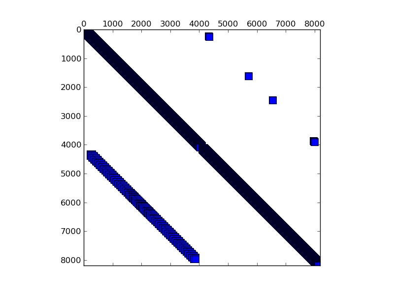

Matrix: dw8192
Name, Order, Nonzeros, Unique Values, Sparsity, MC(2), MC(5), MC(8), MC(10) dw8192 8194 41746 673 0.06218 0.44814 0.68117 0.97480 1.00000 1.00000

Program arguments: ../build/test_spmv_sim ../test-benchmark/dw8192.mtx File: ../test-benchmark/dw8192.mtx Sorting took: took 0.0713946 seconds. Nonzeros: 41746 Running on DFE Result Simple Total cycles=41970,41968, Result Simple Padding cycles=32,32, Result Simple Reduction cycles=32768,32768, Running on architecture with maxRows = 200000 Result Simple Iterations=1, Result Simple Took (ms)=2.33056, Result Simple Est (ms)=0.0004197, Result Simple Gflops (est)=0.198933, Result Simple Gflops (actual)=3.58249e-05, Test passed! All tests passed!